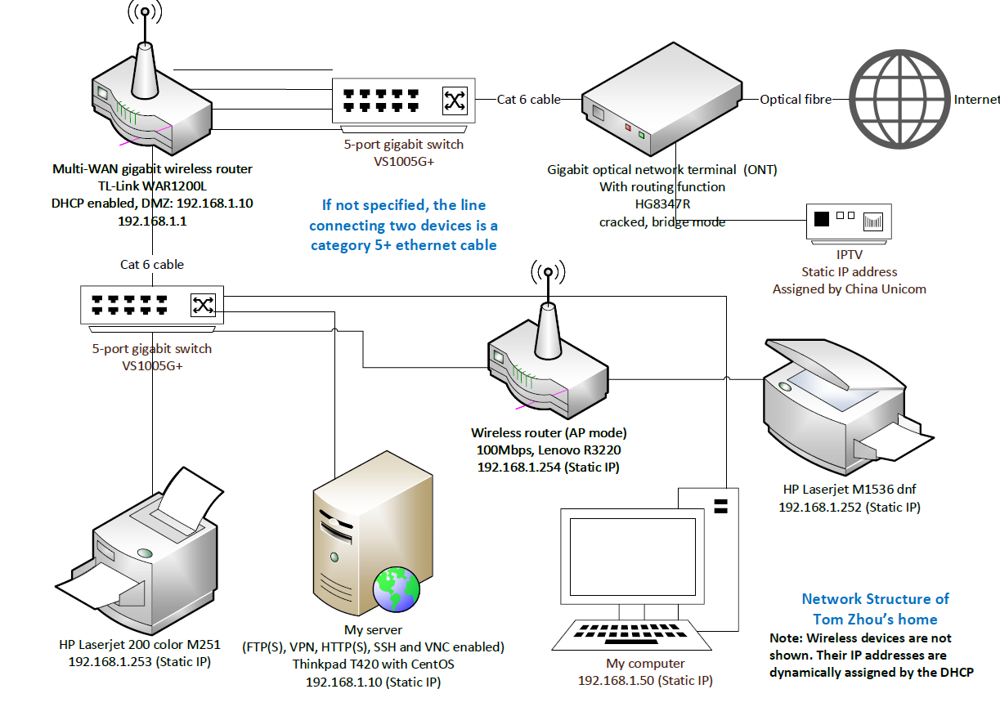

Structure of my home area network and website #TomsProjects
The network of my home
my network.vsdx
My website structure
The structure is complicated because of the following reasons
China Unicom blocks standard HTTP and HTTPS ports (80 and 443), so I have to get help from the URL forwarding function provided by Cloudflare (free of charge).
The upload bandwidth is 1/10 of the download bandwidth, so I have to establish more routes to diverge high traffic (Multi-dialing is not explicitly prohibited in my contract with China Unicom).
I am unable to acquire static IP addresses, so I must use DDNS provided by Oray (free of charge)

Web struct.vsdx
Discussions